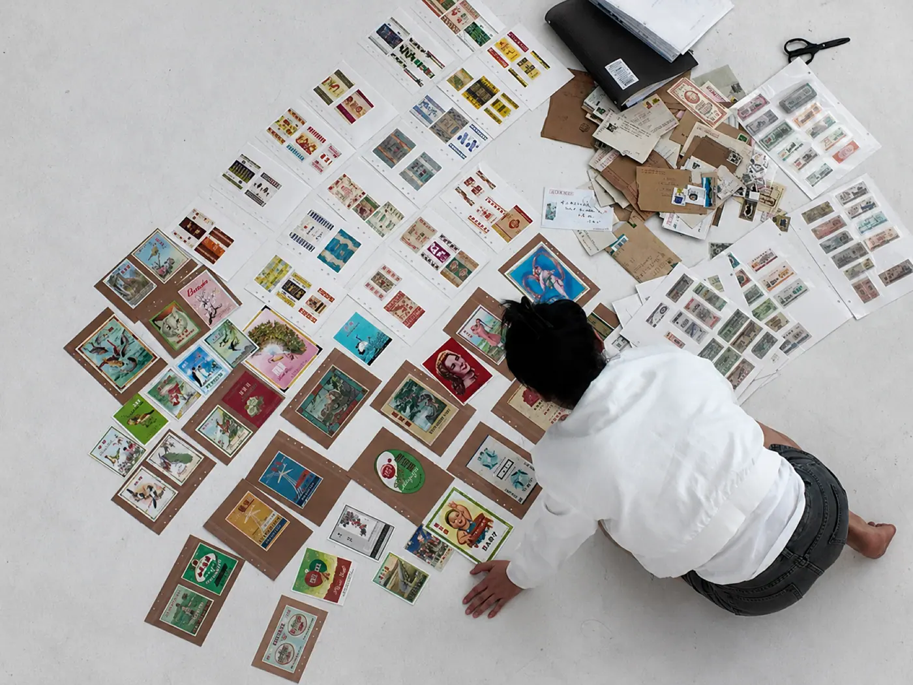
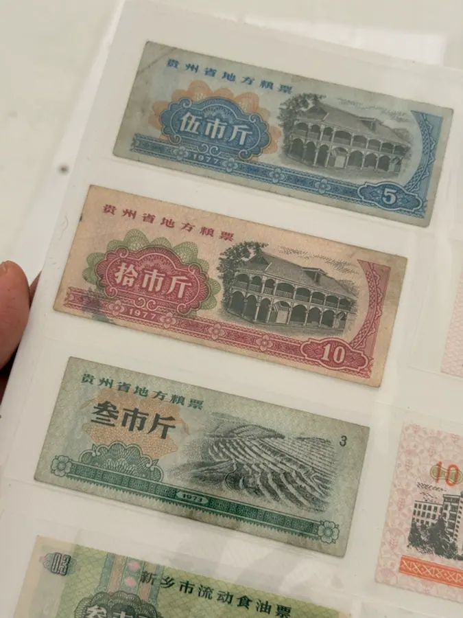
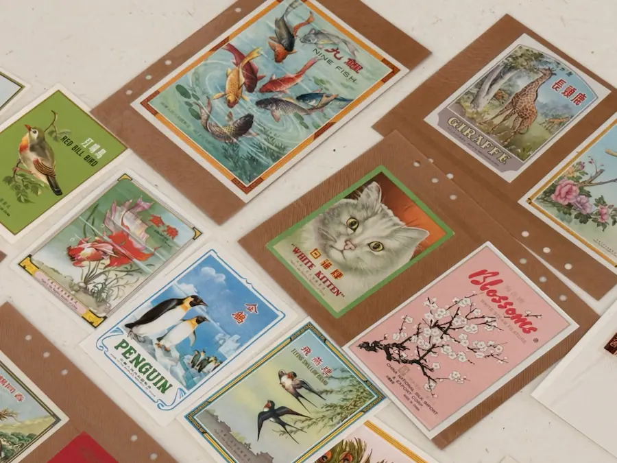
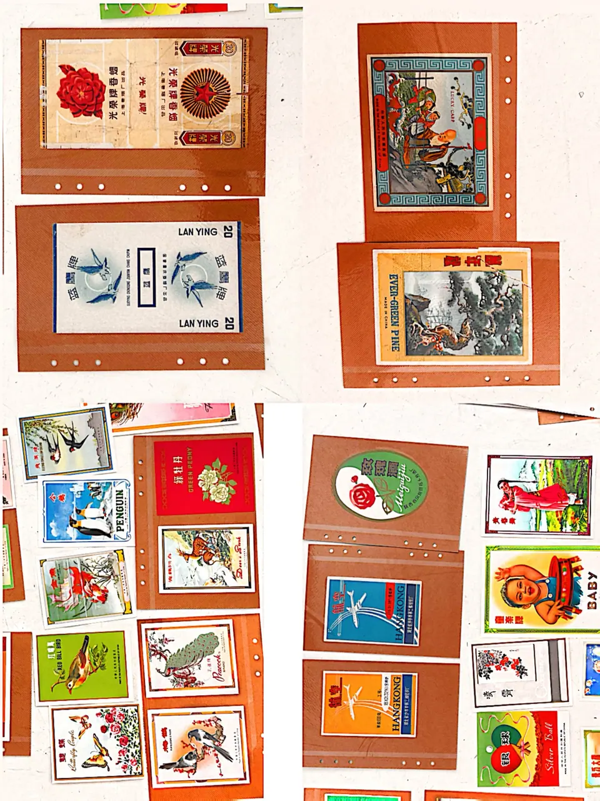
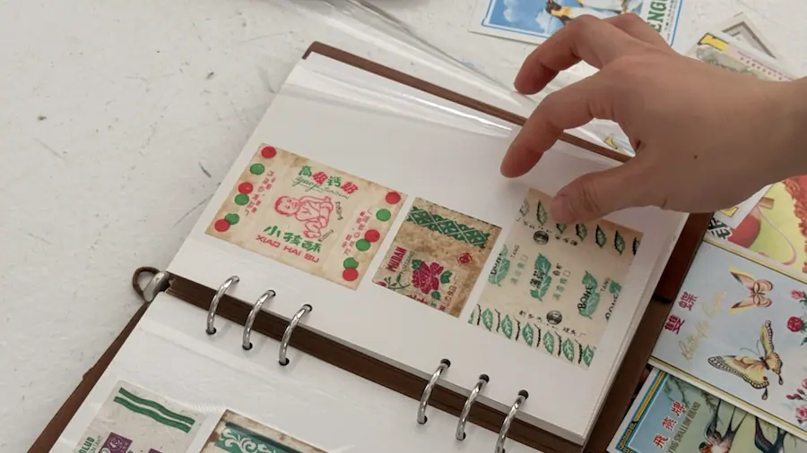
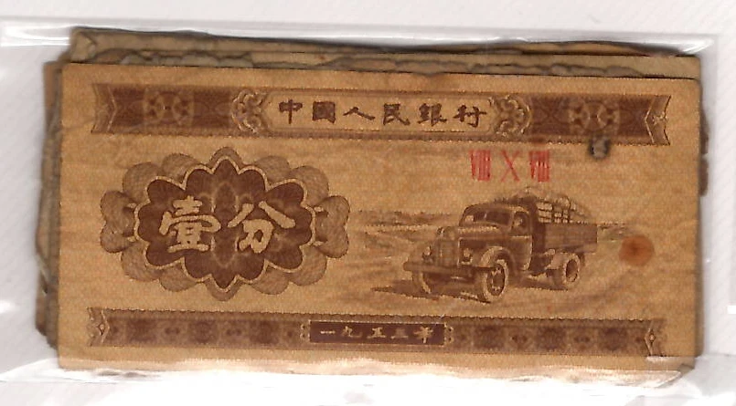
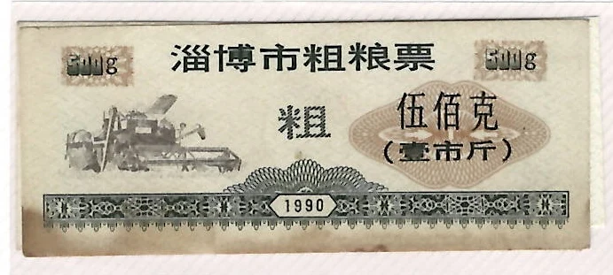
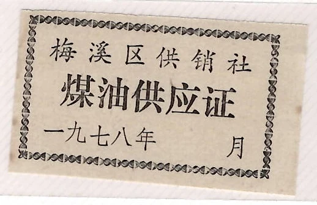

CURRENT PRACTICE / 01
The Bureau of Invalidated Tickets
AFTER USE / A WORKING RESEARCH FRAMEWORK
Tracing how obsolete paper once organised access, allocation, exchange, recognition and desire—and how these relations persist after use.
I am not collecting rare objects. I am tracing everyday systems through the paper they left behind.

Project
After use
The bureau is not a collection of old things. It is a research framework for asking what happens to organising relations after the paper systems that enacted them cease to operate.
These papers did not merely represent social and commercial systems. Through their circulation and conditions of use, they helped those systems operate in everyday life.
Some papers organised eligibility, quantity, time, allocation and exchange. Others organised recognition, attraction and commodity value. The project traces these different operations through material residue, historical context and situated encounters without presenting later interpretation as recovered fact.
01
RESEARCH ORIGIN
Collection routes
Objects after use
The project began with obsolete paper found at street bookstalls in Xi'an and grew through livestream auctions, Kongfz, Xianyu and collector networks.
Papers that had lost their original administrative or commercial function entered a second economy of bidding, exchange and collecting. This return to circulation made invalidation itself perceptible: the objects no longer operated as tickets or packaging, yet the systems of eligibility, value, attraction and desire remained materially present.
02
ARTIST-ORGANISED ARCHIVE
Before machine reading
Situated classification
The materials were already being sorted, compared and interpreted before they became digital records. Tickets were read through exchange, qualification and institutional identity; grain coupons through region; wrappers through colour, attraction, accumulation and desire. These are situated artistic classifications rather than a recovered historical taxonomy.

Artist grouping / Regulated access and exchange
Eligibility, quantity and allocation
Ration coupons and exchange vouchers organised who could obtain what, how much, where and when. Group reading makes their explicit conditions, regional differences, repetition and traces of handling available for comparison.
Eligibility · Quantity · Location · Time · Allocation · Exchange

Artist grouping / Commodity image and value
Recognition, attraction and value
Wrappers and labels participated in naming, recognition, attraction, perceived authenticity and commodity value. Single-object reading keeps colour, typography, printed image and handling trace available without reducing them to visual similarity alone.
Naming · Recognition · Attraction · Authenticity · Commodity value

Peripheral material / Awaiting entry
Held at the edge of the corpus
Matchbox prints, cigarette packaging, stamps and other printed matter remain visible in the working archive without becoming a third equal category. They enter the core corpus only when provenance and analysis show that they extend the research question.
Retained · Unresolved · Awaiting provenance · Conditional entry

FROM PHYSICAL OBJECTS TO DIGITAL RECORDS
The first digital translation does not coincide with the physical archive.
An artist-led inventory identified 318 distinct physical objects and checked them for duplication. The present web archive contains 296 candidate digital crop records produced through a mixed computational and manually adjusted extraction workflow. A digital record may merge several objects, omit an object boundary or preserve a scan condition rather than one independently verified object.
- 318
- Distinct physical objects · artist count
- 296
- Candidate digital crop records
- 185
- Ticket-and-voucher records in Run 01
- 20
- Draft comparisons awaiting artist validation
Object–record correspondence / under reconciliation
Inspect the 296-record working archive03
WHEN ONE SYSTEM READS ANOTHER
Computational re-reading
Diagnostic evidence
These objects have already passed through administrative or commercial operation, secondary circulation and artist-led classification. They are now being read again by a contemporary computational system.
The machine does not replace those earlier systems. Its classifications, omissions and misreadings are retained as diagnostic evidence: they reveal which visual and textual properties become computable, which material relations disappear and where a new record is reconstructed by the reading process itself.

Several objects become one record.
The crop preserves the scan as a single unit while collapsing the boundaries between physical objects.

A plausible character breaks the unit.
Relatively high OCR confidence does not prevent 市斤 from becoming 市厅.

The label is read; the blank is lost.
OCR detects 月 but not the meaningful condition that no month was entered.
RUN 01 / METHOD RECORD · ARTIST VALIDATION ONGOING
A fixed diagnostic subset tests where readings fail to coincide.
Run 01 processed 185 candidate ticket-and-voucher records drawn from the wider 296-record working archive. The output remains a preliminary machine-reading pilot: it does not establish provenance, object identity or historical fact.
04
NETWORK INTERFACE
Artist-directed
Code-assisted prototype
The network is a curated interface for placing institutional, material, market, artistic and computational readings in relation. It does not resolve them into a single taxonomy; it stages their differences and keeps their evidential status visible. It is not an automatically discovered knowledge graph.
Relation terms, featured examples, information density and interaction behaviour were developed through an artist-directed, iterative prototyping process. Here, interaction is used as a research method for comparing how different systems make the same material legible.
- Relations
- Eligibility · allocation · exchange · recognition · attraction · value · desire
- Reading layers
- Documented context · material trace · secondary circulation · artist proposition · machine output · unresolved
- Interaction
- Grid and relation views · object-level evidence reading · zoom · drag · object inspection
- Boundary
- Connections remain curated propositions; they do not claim machine-discovered historical meaning
05
PRACTICE EVIDENCE
Process evidence
Duration 02:00
Materials are touched, turned, compared and rearranged. The film records the hand as part of the research method rather than presenting a finished archive.
F–01 / 02:00 / Handling · Grouping · Comparison / Silent research cut
06
CURRENT LIMITS AND NEXT COMPARISON
Phase 01 complete
Research ongoing
Phase 01 is complete as archive construction, web prototyping and a preliminary machine-reading pilot. The research is not complete: the next phase returns these technical findings to the wider inquiry into how organising relations persist, migrate and are reconfigured after use.
- 01Continue provenance and historical research into the specific institutional and commercial relations carried by individual objects.
- 02Reconcile 318 distinct physical objects with 296 candidate digital records while preserving the difference between object and record.
- 03Compare institutional operation, secondary circulation, artist-led classification and computational reading as distinct systems of organisation.
- 04Develop an interaction prototype that keeps observation, documentation, inference, artistic proposition, machine output and the unknown visibly separate.
- 05Test whether a later participant-facing pilot extends the inquiry; it remains a possible method rather than a predetermined endpoint.